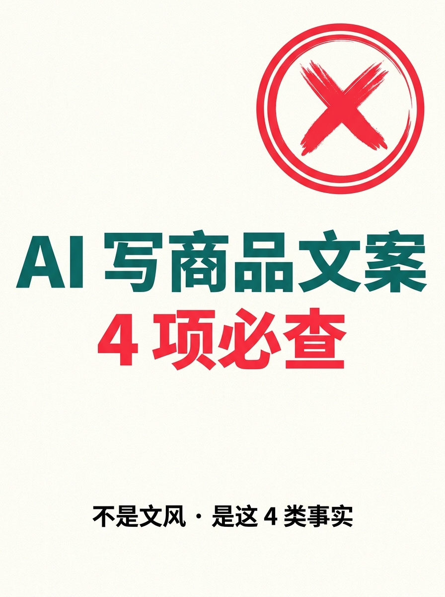
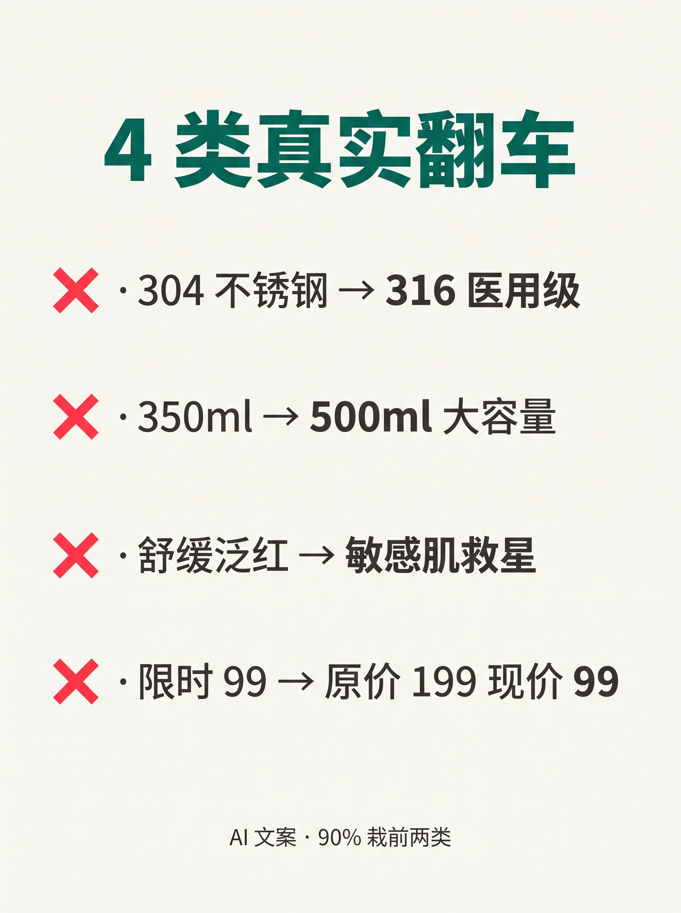
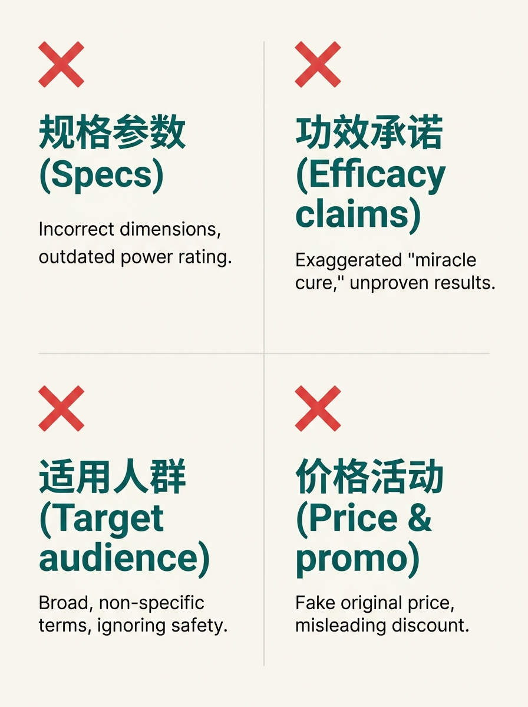
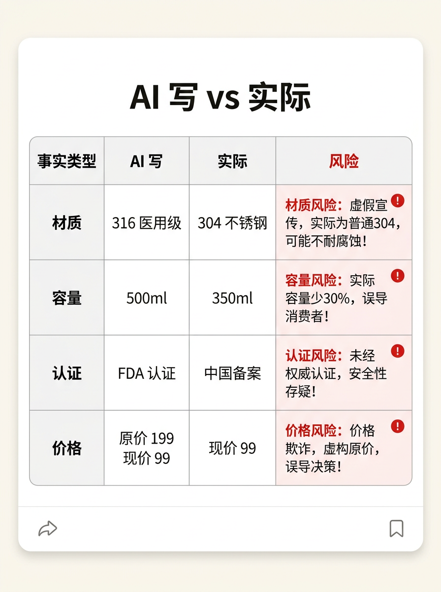
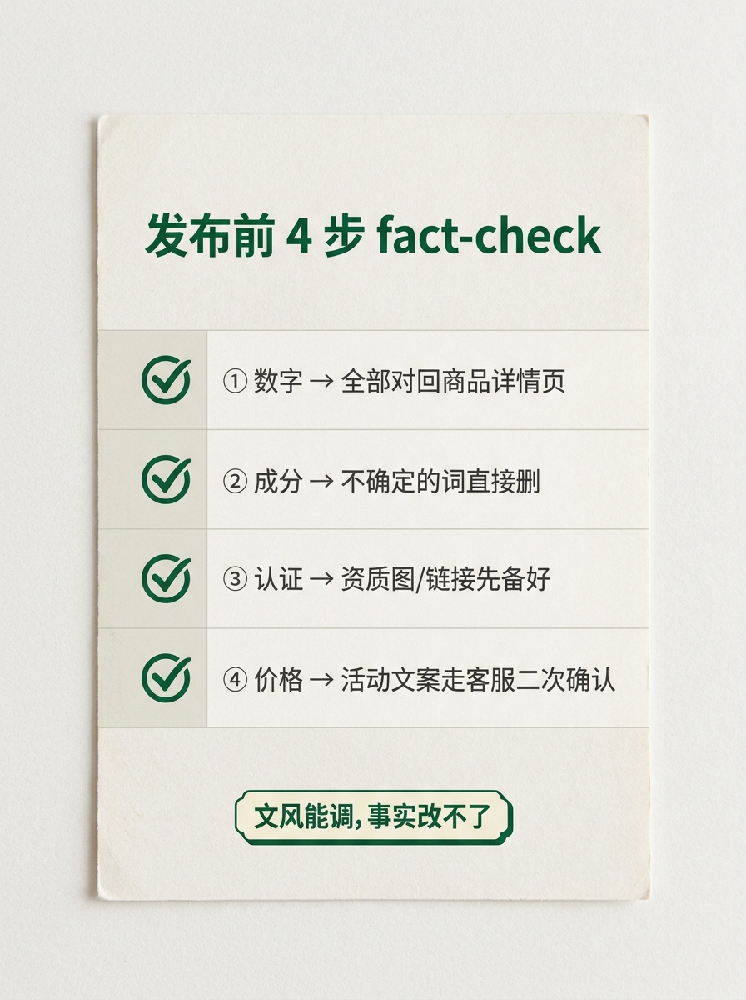
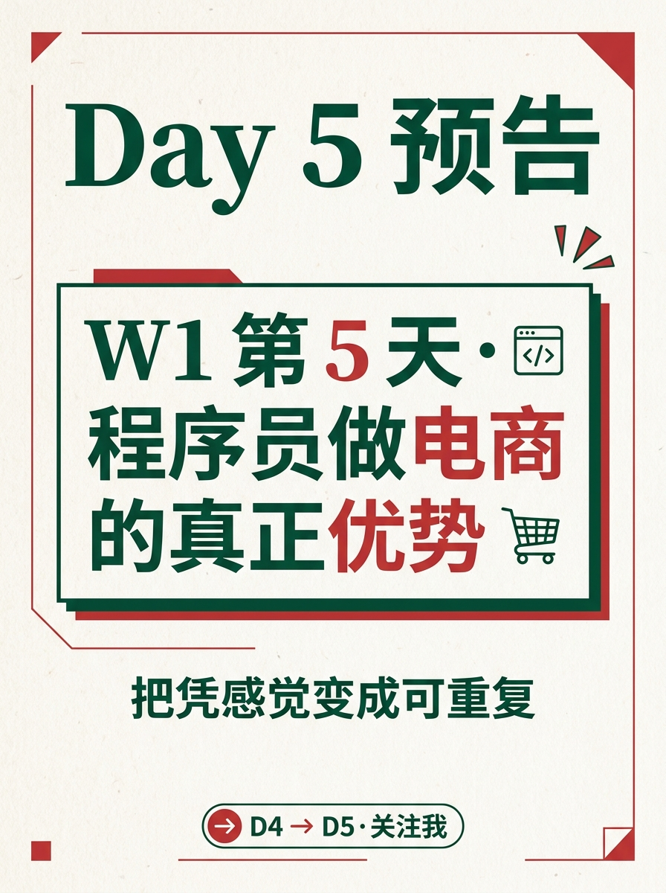

使用说明:所有内容已经按发布标准预排好,发布前请用最后一步的 3 个按钮复制。
6 张图按顺序上传小红书即可。






AI 写商品文案,4 类事实翻车
D2 跑了 3 套 AI 文案流程,我以为最难的是"写得像不像人"。 跑了 5 款商品,翻了 12 次车 —— 翻车的不是文风,是事实。 ───── 4 类真实翻车 ───── · AI 写"304 不锈钢" → 升级成"316 医用级" · AI 写"350ml" → 扩成"500ml 大容量" · AI 写"舒缓泛红" → 变成"敏感肌救星" · AI 写"限时 99" → 补成"原价 199 现价 99" ───── 4 类事实,90% 的人栽前两类 ───── ❌ 材质成分:把 304 编成 316 / 食品级编成医用级 ❌ 容量规格:把 350ml 写成 500ml / 5 色扩成 12 色 ❌ 功效认证:中国备案写 FDA 认证 / 实验室数据写临床有效 ❌ 价格活动:现价 99 编"原价 199 现价 99" / 满减写五折 ───── 翻车对比表 ───── 事实类型 AI 写 实际 风险 材质 316 医用级 304 不锈钢 虚假宣传 容量 500ml 350ml 货不对板 认证 FDA 认证 中国备案 资质造假 价格 原价 199 现价 99 退一赔三 ───── 发布前 4 步 fact-check ───── ① 数字 → 全部对回商品详情页 ② 成分 → 不确定的词直接删 ③ 认证 → 资质图/链接先备好 ④ 价格 → 活动文案走"客服二次确认" ───── 程序员视角 ───── 文风能调,事实改不了。 AI 不是"故意骗人",是按概率拼字 —— 不熟的领域它会"自信地编"。 解法不是"换更好的 prompt",是"加一道人工 fact-check 关卡"。 工程师最擅长的事:把模糊交付变成可校验流程。 评论区:你被 AI 翻车过哪一类? 👇 ───── Day 5 预告 ───── W1 第 5 天 · 程序员做电商的真正优势 把"凭感觉"变成可重复 关注我,看 30 天跑完我会得出什么结论 🌱
#前端转AI电商
#AI文案
#AI避坑
#电商文案
#factcheck
♡ 收藏
💬 评论
↗ 分享
📋 一键复制
📊 D4 数据复盘
案例来源: D2 跑过的真实测试(5 款商品 × 3 套流程,D2 跑出 12 处事实错误,D4 归纳为 4 类)
前两类占比: 90%(材质 + 容量 = 翻车重灾区,小团队先盯这两类)
可执行清单: 4 步 fact-check(数字/成分/认证/价格,工程师最容易套用)
核心结论: 文风能调,事实改不了 —— AI 不会"故意骗人",但会"自信地编"
🚀 发布前 15 分钟 SOP
- 打开小红书 App → 创建笔记
- 选 6 张图(封面 1 + 内页 5),按顺序排好
- 选 3:4 竖图
- 标题:AI 写商品文案,4 类事实翻车
- 正文:点"复制正文"按钮粘贴
- 加 5 个标签
- 选发布时间:周四 20:00-21:00
- 发布
📈 发布后 24 小时 SOP
| 时间 | 动作 | 目标 |
|---|---|---|
| 10 分钟 | 自己评论扣 1("你被 AI 翻车过哪一类?") | 激活评论区话题 |
| 30 分钟 | 每条评论都回复 | 活跃感 |
| 2 小时 | 截图保存首日数据 | 复盘素材 |
| 6 小时 | 看一次数据 | 判断是否二次推 |
| 24 小时 | 统计 D1-D4 累计,决定 D5 钩子 | W1 收尾节奏 |
🎯 Day 4 数据目标
| 指标 | 目标 | 备注 |
|---|---|---|
| 曝光 | ≥ 800 | D1-D3 累计算 W1 收官 |
| 收藏率 | ≥ 8% | fact-check 清单天然高收藏 |
| 评论 | ≥ 60 | 互动问题直接,晒经验比猜答案更易参与 |
| 涨粉 | ≥ 80 | 干货 + 避坑定位精准 |
| D5 钩子 | 程序员做电商的真正优势 | 承接 D4 的工程化结论 |
💡 关键设计点
1. 标题 = 反常识钩子
- "不是文风" = 反常识(默认以为 AI 翻车是文风)
- "4 类事实" = 数字 + 答案导向(用户知道点开能拿到什么)
2. 正文 = 4+4+1 结构
- 4 类翻车案例(具体反例,情感钩子)
- 4 类事实分类(抽象归类,工具价值)
- 4 步 fact-check(可执行清单,收藏价值)
- 程序员视角(差异化 + 人设)
3. 图文对应
- 图 01 = 封面(红色检查章 + 4 类事实)
- 图 02 = 4 类翻车案例(列表)
- 图 03 = 4 类事实分类(2x2 象限)
- 图 04 = 对比表(杀手锏:AI 写 vs 实际 vs 风险)
- 图 05 = 4 步 fact-check(清单)
- 图 06 = Day5 预告(系列感)
4. 工程师视角 = 差异化锚点
- "工程师最擅长的事:把模糊交付变成可校验流程"
- 把"避坑"上升到"流程化思维"
- 承接 D3 的"按场景选工具"→ D4 的"加 fact-check 关卡"
⚠️ 注意事项
- 不要删"翻车对比表"——这是 D4 的杀手锏(AI 写 vs 实际,用户一眼看懂价值)
- 4 类翻车案例要保留具体数字(304/316/350ml/500ml)——具体才有说服力
- fact-check 4 步顺序不要换——按"最容易翻车 → 最难翻车"排:数字→成分→认证→价格
- 6 张图必须按顺序——封面(钩子)→ 案例(共鸣)→ 分类(归类)→ 对比(价值)→ 清单(行动)→ 预告(系列)
- 正文里 ❌ 用小红书红 #ff2442——警示色贯穿